目录
@
在学习SSM框架中，我建议初学者最好先学Spring框架，其次mybatis接着springMVC，先学mybatis当然也是可以的，今天我们就以绝对优雅的姿态闯进Spring世界，系好安全带，准备好了吗，出发了哦！！！咳咳....平时开发接触最多的估计就是IOC容器，它可以装载bean（所谓的bean也就是我们java中的类，当然也包括servicedao里面），有了这个机制，我们就不用在每次使用这个类的时候为它初始化，很少看到键字new。另外spring的aop，事务管理等等都是我们经常用到的，可见Spring的尤为重要的作用Spring的核心是控制反转（IoC）和面向切面（AOP）
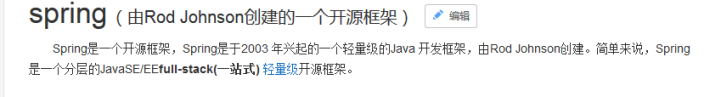
肯定有熊dei会问SE/EE开发的一站式框架所谓的一站式是什么意思，（哼，人类，我早就猜到你会问了）
所谓一站式框架指的是有EE开发的每一层解决方案。
WEB层 ：SpringMVC
Service层 ：Spring的Bean管理，Spring声明式事务
DAO层 ：Spring的Jdbc模板，Spring的ORM模块
俗话说，人狠话不多（兄嘚看图）
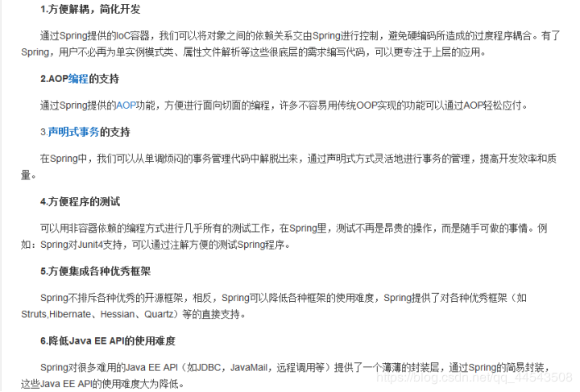
Spring3.x、Spring4.x和Spring5.x
正所谓，人狠话不多（兄嘚看图）
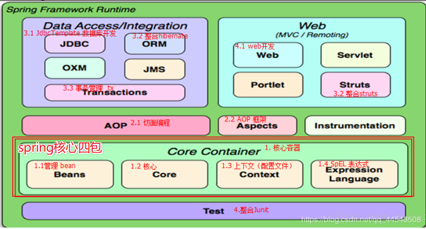
一说起IOC我就想起了武哥对IOC的理解的几个例子，可谓通俗易懂，非常适合刚入门Spring的兄嘚！有兴趣的可以去了解了解武哥，武哥博客：https://blog.csdn.net/eson_15
IOC（Inverse of Control）：控制反转，也可以称为依赖倒置。
控制反转：将对象的创建权反转给（交给）Spring。
所谓依赖，从程序的角度看，就是比如A要调用B的方法，那么A就依赖于B，反正A要用到B，则A依
赖于B。所谓倒置，你必须理解如果不倒置，会怎么着，因为A必须要有B，才可以调用B，如果不倒
置，意思就是A主动获取B的实例：B b = new B()，这就是最简单的获取B实例的方法（当然还有各种
设计模式可以帮助你去获得B的实例，比如工厂、Locator等等），然后你就可以调用b对象了。所
以，不倒置，意味着A要主动获取B，才能使用B；到了这里，就应该明白了倒置的意思了。倒置就是
A要调用B的话，A并不需要主动获取B，而是由其它人自动将B送上门来。
形象的举例就是：
通常情况下，假如你有一天在家里口渴了，要喝水，那么你可以到你小区的小卖部去，告诉他们，你需要一瓶水，然后小卖部给你一瓶水！这本来没有太大问题，关键是如果小卖部很远，那么你必须知道：从你家如何到小卖部；小卖部里是否有你需要的水；你还要考虑是否开着车去；等等等等，也许有太多的问题要考虑了。也就是说，为了一瓶水，你还可能需要依赖于车等等这些交通工具或别的工具，问题是不是变得复杂了？那么如何解决这个问题呢？
解决这个问题的方法很简单：小卖部提供送货上门服务，凡是小卖部的会员，你只要告知小卖部你需要什么，小卖部将主动把货物给你送上门来！这样一来，你只需要做两件事情，你就可以活得更加轻松自在：
第一：向小卖部注册为会员。
第二：告诉小卖部你需要什么。
这和Spring的做法很类似！Spring就是小卖部，你就是A对象，水就是B对象
第一：在Spring中声明一个类：A
第二：告诉Spring，A需要B
假设A是UserAction类，而B是UserService类
<bean id="userService" class="org.leadfar.service.UserService"/>
<bean id="documentService" class="org.leadfar.service.DocumentService"/>
<bean id="orgService" class="org.leadfar.service.OrgService"/>
<bean id="userAction" class="org.leadfar.web.UserAction">
<property name="userService" ref="userService"/>
</bean>在Spring这个商店（工厂）中，有很多对象/服务：userService,documentService,orgService，也有很多会员：userAction等等，声明userAction需要userService即可，Spring将通过你给它提供的通道主动把userService送上门来，因此UserAction的代码示例类似如下所示：
package org.leadfar.web;
public class UserAction{
private UserService userService;
public String login(){
userService.valifyUser(xxx);
}
public void setUserService(UserService userService){
this.userService = userService;
}
}
在这段代码里面，你无需自己创建UserService对象（Spring作为背后无形的手，把UserService对象通过你定义的setUserService()方法把它主动送给了你，这就叫依赖注入！），当然咯，我们也可以使用注解来注入。Spring依赖注入的实现技术是：动态代理
官网下载：http://spring.io/
什么？不会下载？what？？？
好吧，已打包好了QAQ：https://pan.baidu.com/s/18wyE-5SRWcCu12iPOX56pg
什么？没有网盘？what？？？
有事请烧香谢谢...
解压之后，文件说明：
docs ：Spring的开发规范和API
libs ：Spring的开发的jar和源码
schema ：Spring的配置文件的约束
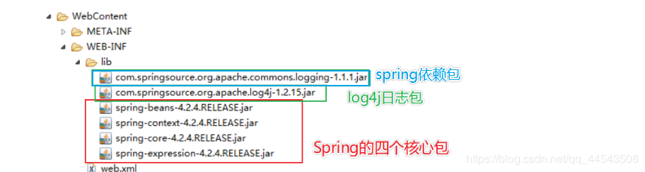
创建普通接口，定义一个eat方法
package com.gx.sping;
public interface IUserDao {
public void eat();
}
创建普通实现类
package com.gx.sping;
public class UserDaoimpl implements IUserDao {
@Override
public void eat() {
// TODO Auto-generated method stub
System.out.println(用户eat了");
}
}
创建普通接口和类出现的问题：
如果底层的实现切换了，需要修改源代码，能不能不修改程序源代码对程序进行扩展？
重点来了，要想不改变源码，Spring的IOC就能实现！如下图：Spring的IOC底层实现
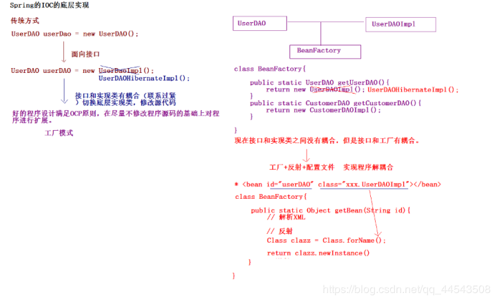
1、在classpath下（也就是src）创建一个XML文件
2、文件名最好统一叫applicationContext.xml
3、其xml文件的内容头为schema约束
4、约束文件位置在spring的解压路径下lspring-framework-4.2.4.RELEASE\docs\spring-framework-reference\html\xsd-configuration.htm
5、不要求xml文件的内容头能够背出来，但要了解的是你要知道它是怎么来的
6、xml文件的内容头添加后，将实现类交给Spring管理
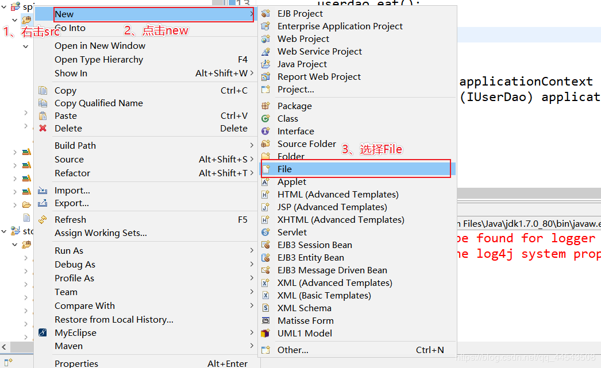
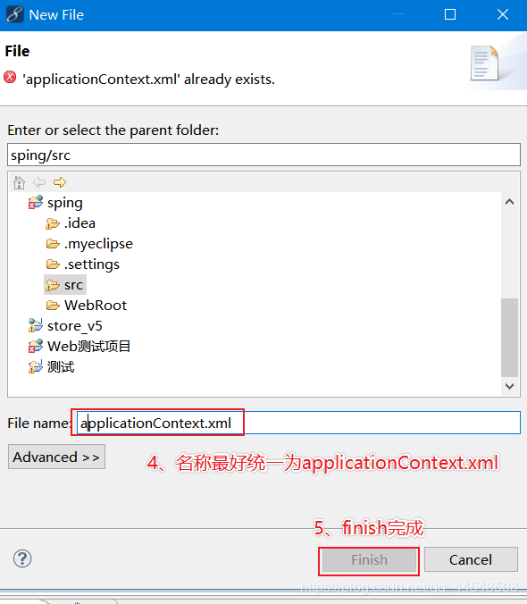
applicationContext.xml配置文件如下
<?xml version="1.0" encoding="UTF-8"?>
<beans
xmlns="http://www.springframework.org/schema/beans"
xmlns:xsi="http://www.w3.org/2001/XMLSchema-instance"
xsi:schemaLocation="
http://www.springframework.org/schema/beans
http://www.springframework.org/schema/beans/spring-beans.xsd">
<!-- 实现类UserDaoimpl交给Spring管理 -->
<bean id="IuserDao" class="com.gx.Ioc.UserDaoimpl" ></bean>
</beans>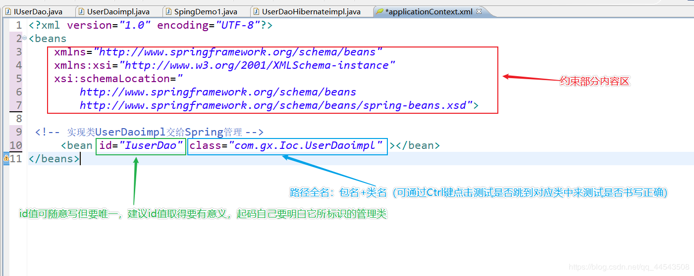
package com.gx.Ioc;
import org.junit.Test;
import org.springframework.context.ApplicationContext;
import org.springframework.context.support.ClassPathXmlApplicationContext;
public class SpingDemo1 {
@Test
public void demo11() {
// 面向接口传统方式
UserDaoimpl userdao = new UserDaoimpl();
userdao.eat();
}
//Spring的bean管理方式
@Test
public void demo22() {
ApplicationContext applicationContext = new ClassPathXmlApplicationContext("applicationContext.xml");
IUserDao userdao = (IUserDao) applicationContext.getBean("IuserDao");
userdao.eat();
}
}兄嘚，如果测试不成功最好看看二者是否对应！！！
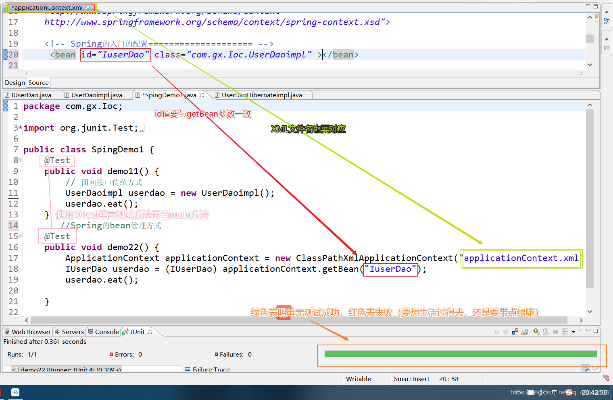
兄dei,到这里，Spring的入门（IOC）算是入门了，是不是觉得很有成就感啊?
拉倒吧! 我都不好意思说了.（兄dei,我错了，是我飘了，呀呀呀，兄dei别打脸鸭QAQ）
但是我依旧是阻止不了你骄傲的心.
那就顶我,让我感受感受你的骄傲!哈哈哈QAQ
IOC不是什么技术，而是一种设计思想，IOC能指导我们如何设计出松耦合、更优良的程序。传统应用程序都是由我们在类内部主动创建依赖对象，从而导致类与类之间高耦合，难于测试；有了IoC容器后，把创建和查找依赖对象的控制权交给了Spring容器，由容器进行注入组合对象，所以对象与对象之间是松散耦合，这样利于功能复用，更重要的是使得程序的整个体系结构变得非常灵活。
IOC：控制反转，将对象的创建权反转给了Spring。
DI：依赖注入，前提必须有IOC的环境，Spring管理这个类的时候将类的依赖的属性注入（设置）进来。比如说下面讲到的Spring的属性注入其实就是典型的DI
所谓继承:is a
Class A{
}
Class B extends A{
}所谓依赖：
Class A{
}
Class B{
public void xxx(A a){
}
}
所谓聚合:has a
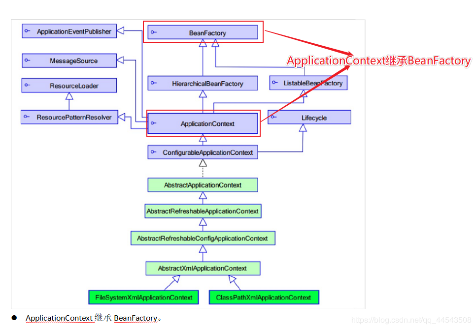
BeanFactory：调用getBean的时候，才会生成类的实例。
ApplicationContext：加载配置文件的时候，就会将Spring管理的类都实例化。
ApplicationContext有两个实现类
1、ClassPathXmlApplicationContext ：加载类路径下的配置文件
2、FileSystemXmlApplicationContext ：加载文件系统下的配置文件
在XML文件中要使用各种标签来给spring进行配置，博主我这佩奇脑袋怎么可能记住spring中所有的标签呢，不怕不怕，博主我会配置XML的提示配置QAQ，会了这一招就算兄dei你是乔治脑袋也不用担心（再说了我看兄dei各各英俊潇洒，玉树临风，聪明绝顶...咳咳，暴露了暴露了）
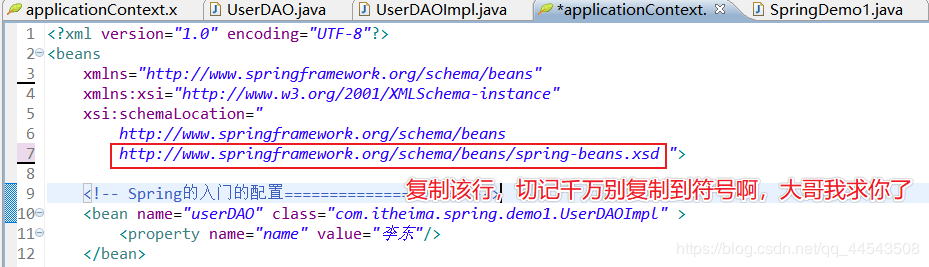
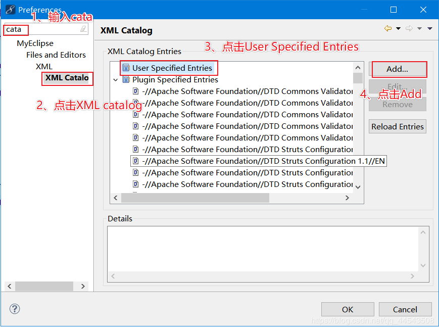
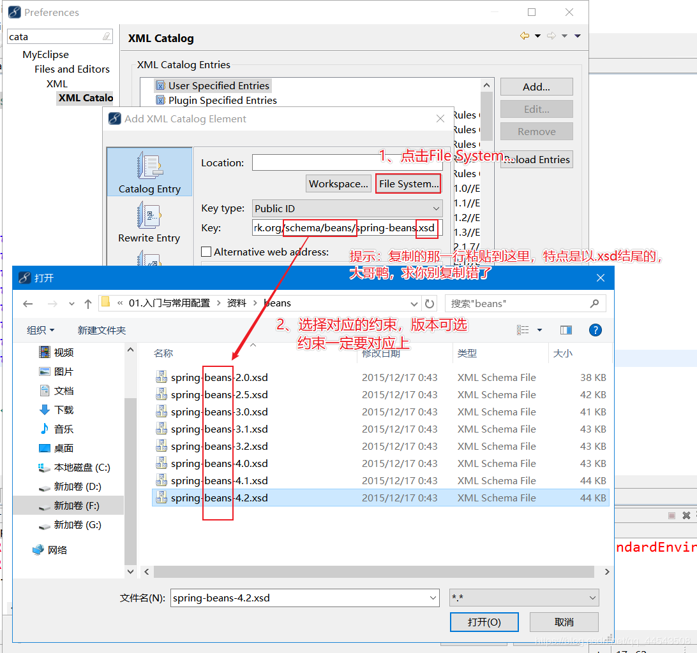
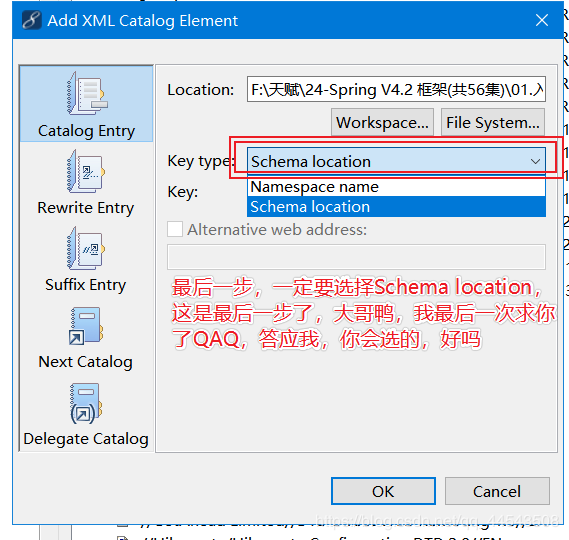
id :使用了约束中的唯一约束。里面不能出现特殊字符的。上面提及到了要与getbean参数值对应
name :没有使用约束中的唯一约束（理论上可以出现重复的，但是实际开发不能出现的）。里面可以出现特殊字符。
init-method :Bean被初始化的时候执行的方法
destroy-method :Bean被销毁的时候执行的方法（Bean是单例创建，工厂关闭）
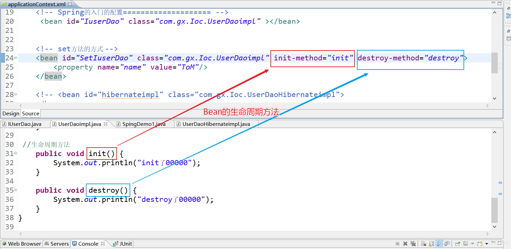
scope属性 ：Bean的作用范围
scope属性值如下（主要用的是前二者）
singleton ：scope属性的默认值，Spring会采用单例模式创建这个对象。
prototype ：多例模式。（Struts2和Spring整合一定会用到）
request ：应用在web项目中，Spring创建这个类以后，将这个类存入到request范围中。
session ：应用在web项目中，Spring创建这个类以后，将这个类存入到session范围中。
globalsession ：应用在web项目中，必须在porlet环境下使用。但是如果没有这种环境，相对于session。
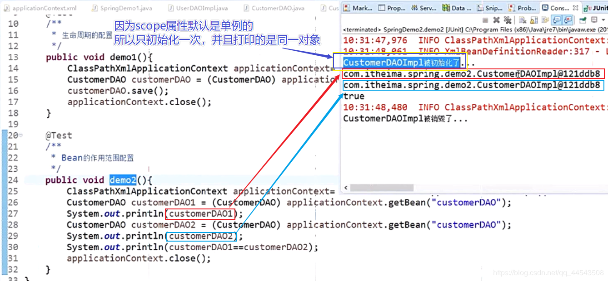
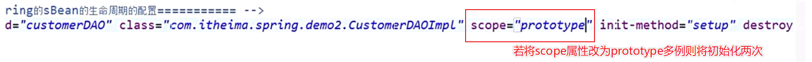
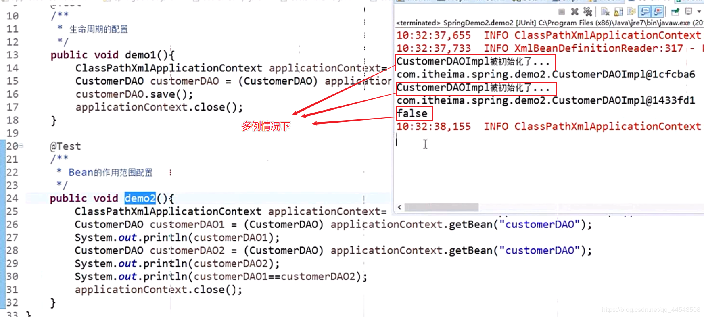
首先，创建几个普通类
com.gx.spring.demo.Car
public class Car {
private String name;
private Double price;
public Car(String name, Double price) {
super();
this.name = name;
this.price = price;
}
@Override
public String toString() {
return "Car [name=" + name + ", price=" + price + "]";
}
}com.gx.spring.demo.Car2
/**
* 用作set方法的属性注入类
*/
public class Car2 {
private String name;
private Double price;
public void setName(String name) {
this.name = name;
}
public void setPrice(Double price) {
this.price = price;
}
@Override
public String toString() {
return "Car2 [name=" + name + ", price=" + price + "]";
}
}
com.gx.spring.demo.Person
/**
* 用作set方法的对象属性注入类
*/
public class Person {
private String name;
private Car2 car2;
public void setName(String name) {
this.name = name;
}
public void setCar2(Car2 car2) {
this.car2 = car2;
}
@Override
public String toString() {
return "Employee [name=" + name + ", car2=" + car2 + "]";
}
}
构造方法的属性注入
constructor-arg 标签用于配置构造方法的属性注入
name ：参数的名称
value：设置普通数据
ref：引用数据，一般是另一个bean id值
当然了，构造方法的方式的属性注入也支持对象属性的注入，标签中对应属性也是ref
如果只有一个有参数的构造方法并且参数类型与注入的bean类型匹配，那就会注入到该构造方法中
applicationContext.xml中配置：
<!-- 构造方法的方式 -->
<bean id="car" class="com.gx.spring.demo.Car">
<constructor-arg name="name" value="玛莎拉蒂"/>
<constructor-arg name="price" value="800000"/>
</bean>测试方法：
/**
* 构造方法方式的普通属性注入方法
*/
public void demo1(){
ApplicationContext applicationContext = new ClassPathXmlApplicationContext("applicationContext.xml");
Car car = (Car) applicationContext.getBean("car");
System.out.println(car);
}Set方法的普通属性注入
property 标签用于配置Set方法的属性注入
name ：参数的名称
value：设置普通数据
ref：引用数据，一般是另一个bean id值
applicationContext.xml中配置：
<!-- set方法的方式 -->
<bean id="car2" class="com.gx.spring.demo.Car2">
<property name="name" value="法拉利黄金跑车"/>
<property name="price" value="10000000"/>
</bean> 测试方法：
@Test
/**
* set方法方式的属性注入
*/
public void demo2(){
ApplicationContext applicationContext = new ClassPathXmlApplicationContext("applicationContext.xml");
Car2 car2 = (Car2) applicationContext.getBean("car2");
System.out.println(car2);
}Set方法设置对象类型的属性
applicationContext.xml中配置：
<!-- set方法注入对象类型的属性 -->
<bean id="Person" class="com.gx.spring.demo.Person">
<!-- value:设置普通类型的值，ref:设置其他的类的id或name-->
<property name="name" value="涛哥"/>
<property name="car2" ref="car2"/>
</bean> 测试方法：
@Test
/**
* set方法注入对象类型
*/
public void demo3(){
ApplicationContext applicationContext = new ClassPathXmlApplicationContext("applicationContext.xml");
Person person= (Person) applicationContext.getBean("Person");
System.out.println(person);
}@Component （作用在类上通用：组件）
@Component（“userService”）相当于< bean id=”userService” class=”...”>
衍生:
@Controller Web层
@Service 业务层
@Repository 持久层
这三个注解是为了让标注类本身的用途清晰
属性注入的注解 （ 可以没有set方法）
普通类型属性：@Value
对象类型属性：@Resource （对应bean中的id）= @Autowired（类型）+ @Qualifier(名称)
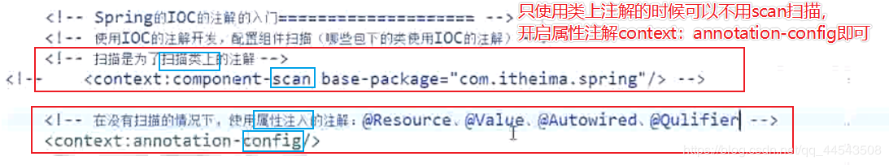
额，初学框架，注解二字可能对于大部分熊dei来说，太过于陌生，注解其实就是在一个类、方法、属性上，使用@注解名称，就比如是我们最熟悉的接实现口中的方法默认会有一个 @Override （熊dei，这样理解能接受？）
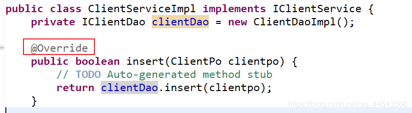
Spring3.x注解的jar包
在Spring3.x的版本中，使用注解开发，只需要 spring核心基础四包外 + log4j包 + 1个依赖包 即可
Spring4.x注解的jar包
然而在Spring4.x版本之后则需在 再添加一个要引入 spring-aop 的 jar 包，因为，spring4.x版本中一些注解的依赖方法封装在spring-aop 的 jar 包中
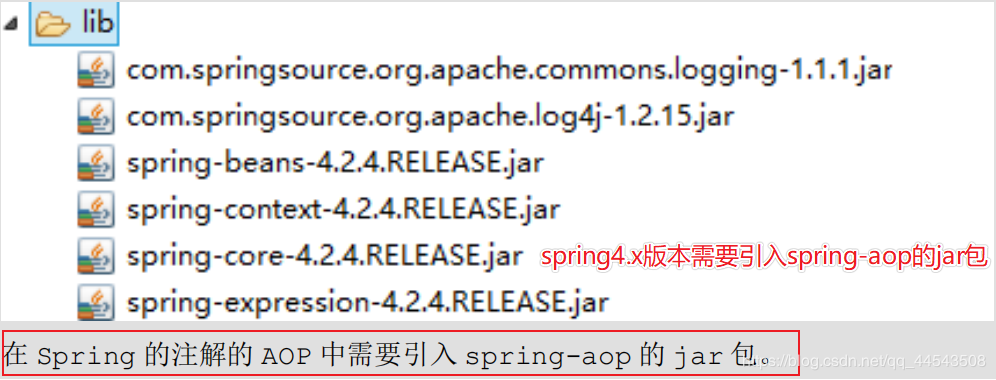
所谓约束就是就是就是约束啦（搽汗），其中bean约束是最基本的约束！（下图也可以看出）
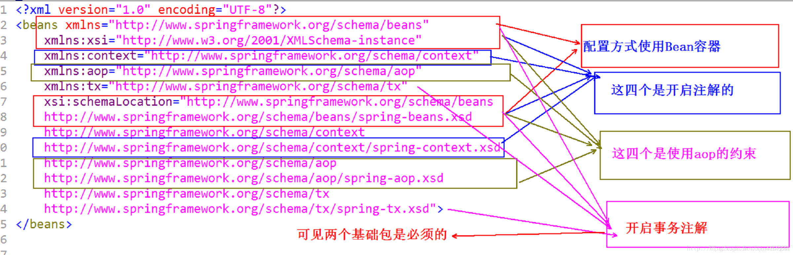
引入约束:(引入 context 的约束):
<beans xmlns="http://www.springframework.org/schema/beans"
xmlns:xsi="http://www.w3.org/2001/XMLSchema-instance"
xmlns:context="http://www.springframework.org/schema/context"
xsi:schemaLocation="
http://www.springframework.org/schema/beans
http://www.springframework.org/schema/beans/spring-beans.xsd
http://www.springframework.org/schema/context
http://www.springframework.org/schema/context/spring-context.xsd">
</beans>public interface UserDao {
public void sayHello();
}
public class UserDaoImpl implements UserDao {
@Override
public void sayHello() {
System.out.println("Hello Spring...");
} }Spring的注解开发：组件扫描（不使用类上注解的时候可以不用组件扫描）
使用注解方式，需要开启组件扫描< context:component-scan base-package=直接包名或者包名.类名/>，当然开发中一般都是base-package=包名，毕竟这样可以扫描整个包，方便开发
Spring 的注解开发:组件扫描(类上注解: 可以直接使用属性注入的注解)
<!-- Spring 的注解开发:组件扫描(类上注解: 可以直接使用属性注入的注解) -->
<context:component-scan base-package="com.gx.spring.demo1"/>1、使用类上注解方式@Component（value=“userDao”），相当于< bean id="userDao class="com.gx.类名">< /bean>
当然value属性名可以省去直接@Component（"userDao"），当然@Component（“value值任意写建议取的要有意义”）
2、注解方式可以没有set方法
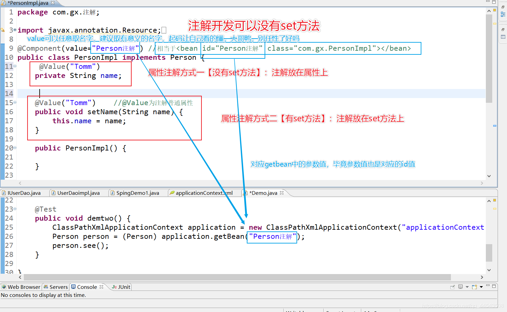
@Component(value="userDao") //相当于配置了<bean id="userDao" class="com.gx.UserDaoImpl "></bean>
public class UserDaoImpl implements UserDao {
@Override
public void sayHello() {
System.out.println("Hello Spring Annotation...");
} }@Test
public void demo3() {
ApplicationContext applicationContext = new ClassPathXmlApplicationContext("applicationContext.xml");
UserDao userDao = (UserDao) applicationContext.getBean("userDao");
userDao.sayHello();
}通过引入p名称空间完成属性的注入：
写法：
普通属性 p:属性名=”值”
对象属性 p:属性名-ref=”值”
P名称空间的约束引入
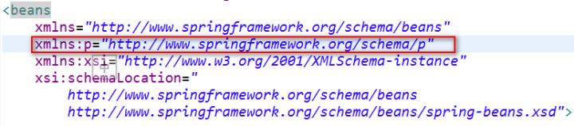
使用p名称空间
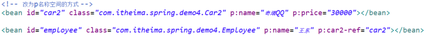
SpEL：Spring Expression Language，Spring的表达式语言。
语法： #{SpEL}
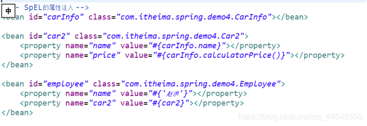
集合类型属性配置：
集合的注入都是在< property>标签中添加子标签
数组：< array >
List：< list >
Set：< set >
Map：< map > ，map存放k/v 键值对，使用
Properties：< props> < prop key="">< /prop>
普通数据：< value >
引用数据：< ref >
<!-- Spring的集合属性的注入============================ -->
<!-- 注入数组类型 -->
<bean id="collectionBean" class="com.gx.spring.demo.CollectionBean">
<!-- 数组类型 -->
<property name="arrs">
<list>
<value>天才</value>
<value>王二</value>
<value>冠希</value>
</list>
</property>
<!-- 注入list集合 -->
<property name="list">
<list>
<value>李兵</value>
<value>赵如何</value>
<value>邓凤</value>
</list>
</property>
<!-- 注入set集合 -->
<property name="set">
<set>
<value>aaa</value>
<value>bbb</value>
<value>ccc</value>
</set>
</property>
<!-- 注入Map集合 -->
<property name="map">
<map>
<entry key="aaa" value="111"/>
<entry key="bbb" value="222"/>
<entry key="ccc" value="333"/>
</map>
</property>
</bean>分模块配置：
在加载配置文件的时候，加载多个，没错，这就是传说中的骚操作，堪称开挂级别的操作（当然，这是可以的不是开挂）
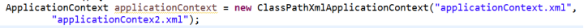
在一个配置文件中引入多个配置文件，简直优秀！！！
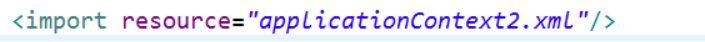
到这里，恭喜恭喜，各位熊dei以优雅的仪式感闯进Spring世界，对Spring的IOC以及DI有了一定了解了，是不是也很期待Spring的Aop呐,毕竟Spring的核心是控制反转（IOC）和面向切面（AOP）。
【Spring框架学习二】Spring的AOP通俗理解以及AOP的入门开发（哎哎，别打..别打..别打脸....）
如果本文对你有一点点帮助，就请点个赞呗，手留余香，谢谢！
最后，欢迎各位关注我的公众号，一起探讨技术，向往技术，追求技术...